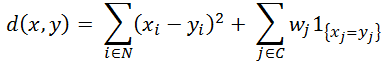
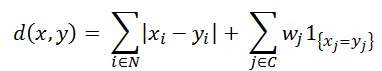

KModes
KModes is an extension of KMeans that supports categorical data. KModes models are fit similarly to KMeans models. The core algorithm is an expectation-maximization algorithm that finds a locally optimal solution.
These are the main steps to fitting the model:
- Initialization
Select a set of K initial cluster centers. You can create this set with the RandomSample function, which samples rows from an input table using the kmeans++ and kmeans|| algorithms. These initialization algorithms create initial cluster centers that are more likely to lead to better local optima.
- E step
A mapper assigns each point in the input table to one of the K clusters, and stores the sums of the numerical attributes and counts of the categorical attributes.
- M step
A reducer aggregates the the statistics created for each worker in the E step and creates new cluster centers. For numerical attributes, the new center is the mean of the value of the attribute for the points assigned to the cluster. For categorical attributes, the new center is the mode of the attribute value for the points assigned to the cluster.
The algorithm runs for either a set number of iterations or until the change in movement of the cluster centers drops below a user-specified threshold.
When assigning points to a cluster, a hybrid distance function that combines a numeric distance and a categorical distance is required. The default distance between two data points in a KModes model is the squared Euclidean distance:

where N denotes the indexes of numerical attributes, C denotes the indexes of categorical attributes, and wj denotes the weight to assign to a category.
The Manhattan distance can also be used:

KModes Syntax
Version 1.6
SELECT * FROM KModes (
ON { table | view | (query) } AS InputTable
[ ON { table | view | (query) } AS InitialSeedTable ]
OUT TABLE OutputTable (output_table)
USING
[ NumClusters (clusters [,...] ) ]
[ ModelIDColumn ('model_id_column') ]
TargetColumns ('target_column' [,...] )
[ StopThreshold (threshold) ]
[ MaxIterNum (max_iterations) ]
[ NumericDistanceMethod ({ 'euclidean' | 'manhattan' }) ]
[ CategoricalDistanceMethod ({ 'overlap' | 'hamming' }) ]
[ CategoryWeights ('weight' [,...] ) ]
[ NumericAsCategorical ({ 'ascat_column' | ascat_column_range }[,...]) ]
[ Seed (seed)
SeedColumns ('seed_column' [,...])
]
) AS alias;KModes Syntax Elements
- OutputTable
- Specify the name of the table in which to output the centroids of the clusters.
- NumClusters
- [Required if you omit InitialSeedTable, disallowed otherwise.] Specify the number of clusters. If you specify a single value, the function trains a single model with the specified number of clusters. If you specify multiple values, the function trains a model for each value.
- ModelIDColumn
- [Optional] Specify the name of the InitialSeedTable column that contains seed values for multiple models.
- TargetColumns
- Specify the input table columns to use for clustering.
- StopThreshold
- [Optional] Specify the convergence threshold. When the centroids move by less than threshold, the algorithm has converged. The threshold must be a nonnegative DOUBLE value.
- MaxIterNum
- [Optional] Specify the maximum number of iterations that the algorithm runs before quitting if the convergence threshold is not met. The max_iterations must be a positive INTEGER.
- NumericDistanceMethod
- [Optional] Specify the distance metric for numeric dimensions.
- CategoricalDistanceMethod
- [Optional] Specify the distance metric for categorical dimensions:
Option Description overlap(Default)Distance is 0 if two points are in same category, 1 otherwise. hammingUsed for categories that are strings of equal length. Percentage of different characters. - CategoryWeights
- [Optional] Specify the weight of each category in the KModes distance. Each weight must be a DOUBLE value.
- NumericAsCategorical
- [Optional] Specify the input table columns that contain numeric variables to interpret as categorical variables. These columns must have numeric SQL data types.
- Seed
- [Optional] Specify the random seed the algorithm uses for repeatable results (for more information, see Nondeterministic Results and UniqueID Syntax Element). The seed must be a LONG value.NoteIf you specify Seed:
- You must also specify SeedColumn.
- You must specify NumClusters, not InitialSeedTable.
- SeedColumn
- [Optional] Specify the names of the InputTable columns by which to partition the input. Function calls that use the same input data, seed, and seed_column output the same result. If you specify SeedColumn, you must also specify Seed.NoteIdeally, the number of distinct values in the seed_column is the same as the number of workers in the cluster. A very large number of distinct values in the seed_column degrades function performance.
Ways to Create Multiple Models
- In the NumClusters syntax element, specify multiple values.
For example, NumClusters (3, 3, 4) fits 3 models, two with 3 clusters and one model with 4 clusters. It is good practice to try multiple initializations when fitting KModes, which is why you might use the same number more than once.
- Use the RandomSample function to select multiple sets of rows from the input data table, and use these randomly selected samples as seeds in the KModes function.
Create a table from a call to RandomSample. Give the NumSample syntax element a set of values x1, x2, …, xn where n is the number of different sets of rows to create (this becomes the number of models later created by KModes) and xi is the number of seed rows to select for each model (this determines the number of clusters in model i later created by KModes). The table column set_id identifies each set of points.
Call KModes, giving the InitialSeedTable syntax element that name of the table you created and specifying ModelIDColumn ('set_id').
KModes Input
| Table | Description |
|---|---|
| InputTable | Contains data points to cluster, with one dimension in each column. |
| InitialSeedTable | [Required if you omit NumClusters, disallowed otherwise.] Contains points that serve as initial cluster centers. |
InputTable and InitialSeedTable Schema
| Column | Data Type | Description |
|---|---|---|
| dimension_i | Any | [Column appears once for each dimension.] Data for dimension i. Each dimension is a feature (attribute) by which to cluster data. Function determines number of dimensions from data. |
KModes Output
Output Summary Schema
This table is displayed on the screen.
| Column | Data Type | Description |
|---|---|---|
| model_id | VARCHAR | [Column appears only if multiple models are trained.] Integer, starting with 0, identifying model. |
| summary | VARCHAR | Model data:
|
| between_cluster_error | DOUBLE PRECISION | Sum of squared distances of centroids to global mean, where squared distance of each mean to global mean is multiplied by number of data points in cluster. |
| total_within_cluster_error | DOUBLE PRECISION | Sum of all within_cluster_ss values. |
| pseudo_f | DOUBLE PRECISION | Value given by this formula: (between_cluster_errror / (K - 1)) / (total_within_cluster_error / (N - K)) where N is total number of data points, or total weight if points are weighted, and K is number of clusters. |
OutputTable Schema
| Column | Data Type | Description |
|---|---|---|
| model_id | INTEGER | [Column appears only if multiple models are trained.] Model identifier. |
| cluster_id | INTEGER | Cluster identifier assigned by function. |
| numerical_attribute | DOUBLE PRECISION | [Column appears once for each numerical attribute.] Name of numerical attribute. |
| categorical_attribute | VARCHAR | [Column appears once for each categorical attribute and for each numerical attribute specified by NumericAsCategorical.] Name of attribute. |
| within_cluster_ss | DOUBLE PRECISION | Total distance summed over all points in cluster, between point and cluster center, as calculated by distance metric. |
| cluster_weight | DOUBLE PRECISION | Total weight of data points assigned to cluster. |
| distance_metric | VARCHAR | Value of Distance syntax element in function call (copied to output table so that you need not specify it again when calling KModesPredict). |
| category_weights | VARCHAR | Value of CategoryWeights syntax element in function call (copied to output table so that you need not specify it again when calling KModesPredict). |
KModes Examples
KModes Example: InitialSeedTable
Input
The InputTable has 32 observations on 11 variables, about different models of cars.
| Variable | Type | Description | drat | wt | qsec | vs | am | gear | carb |
|---|---|---|---|---|---|---|---|---|---|
| mpg | Normalized numerical | Miles/US gallon | -0.835197792 | 0.22254417 | -0.307088658 | S | automatic | 3 | 2 |
| cyl | Numerical treated as categorical | Number of cylinders | -1.246659826 | 2.077504765 | 0.073449451 | S | automatic | 3 | 4 |
| disp | Normalized numerical | Displacement (cubic inches) | 0.24956575 | 0.636460997 | -1.364760755 | S | automatic | 3 | 4 |
| hp | Normalized numerical | Gross horsepower | -0.685575235 | 2.174596366 | -0.239934874 | S | automatic | 3 | 4 |
| drat | Normalized numerical | Rear axle ratio | 0.473999587 | -0.917004624 | 0.426006817 | V | manual | 4 | 1 |
| wt | Normalized numerical | Weight (lb/1000) | -1.564607761 | 0.309415603 | -0.54772305 | S | automatic | 3 | 2 |
| qsec | Normalized numerical | 1/4 mile time | -0.722980874 | 0.360516446 | -1.124126363 | S | automatic | 3 | 4 |
| vs | Categorical | Engine (V or straight) | 0.043834734 | -0.457097039 | -1.314395417 | S | manual | 5 | 6 |
| am | Categorical | Transmission (automatic or manual) | 0.90416444 | -1.039646647 | 0.907275602 | V | manual | 4 | 1 |
| gear | Numerical treated as categorical | Number of forward gears | 0.90416444 | -1.310481114 | 0.588295128 | V | manual | 4 | 1 |
| carb | Numerical treated as categorical | Number of carburetors | 1.166003916 | -0.048290296 | -1.874010283 | S | manual | 5 | 4 |
The InitialSeedTable has three points that serve as initial cluster centers.
| model | mpg | cyl | disp | hp | drat | wt | qsec | vs | am | gear | carb |
|---|---|---|---|---|---|---|---|---|---|---|---|
| Datsun 710 | 0.449543447 | 4 | -0.990182091 | -0.783040459 | 0.473999587 | -0.917004624 | 0.426006817 | V | manual | 4 | 1 |
| Ferrari Dino | -0.064813069 | 6 | -0.691647397 | 0.412942174 | 0.043834734 | -0.457097039 | -1.314395417 | S | manual | 5 | 6 |
| Lincoln Continental | -1.607882616 | 8 | 1.849931752 | 0.996348337 | -1.115740088 | 2.255335698 | -0.016088927 | S | automatic | 3 | 4 |
SQL Call
DROP TABLE kmodes_clusters;
SELECT * FROM KModes (
ON kmodes_input AS InputTable
ON kmodes_init AS InitialSeedTable
OUT TABLE OutputTable (kmodes_clusters)
USING
TargetColumns ('mpg:carb')
NumericAsCategorical ('cyl','gear','carb')
) AS dt;Output
With InitialSeedTable, the cluster centers and assignments are the same every time, with the same distance metric (in this case, the default, Euclidean).
+This query returns the following table:
SELECT * FROM kmodes_clusters;cluster_id mpg disp hp drat wt qsec cyl vs am gear carb within_cluster_ss cluster_weight distance_metric category_weights ---------- ------------------ ------------------ ------------------ ----------------- ------------------ ----------------- --- -- --------- ---- ---- ----------------- -------------- ----------------- ------------------------- 1 -0.2639188168 -0.059076587 0.760068841 0.4478156392 -0.221011145 -1.2494800924 6 s manual 5 4 20.7870494221671 5.0 NULL NULL 0 -0.724943435928571 0.890010157642857 0.511912862714286 -0.9434069635 0.794435602785714 -0.180375863 8 s automatic 3 4 43.6174097337196 14.0 EUCLIDEAN,OVERLAP [1.0, 1.0, 1.0, 1.0, 1.0] 2 0.882215552923077 -0.935750713230769 -0.843624945153846 0.843739945692308 -0.770541747153846 0.674820195846154 4 v manual 4 2 48.7743732753756 13.0 NULL NULL
Download a zip file of all examples and a SQL script file that creates their input tables from the download tab  in the left pane.
in the left pane.
KModes Example: NumClusters
This example specifies NumClusters ('3') to obtain three clusters. Because different cluster centers are produced each time you run the example, cluster assignments might differ.
Input
- InputTable: kmodes_input, as in KModes Example: InitialSeedTable
SQL Call
DROP TABLE kmodes_clusters1;
SELECT * FROM KModes (
ON kmodes_input AS InputTable
OUT TABLE OutputTable (kmodes_clusters1)
USING
NumClusters (3)
TargetColumns ('mpg:carb')
NumericAsCategorical('cyl','gear','carb')
) AS dt ;Output
set_id summary between_cluster_error total_within_cluster_error pseudo_f
------ ------------------------------------------------------------------------------------------------ --------------------- -------------------------- ------------------
0 Number of Clusters: 3
Number of Iterations: 3
Model Converged: true
Number of Data Points: 32.0
196.2432817153941 111.7567182974282 16.974535569904358
SELECT * FROM kmodes_clusters1;set_id cluster_id mpg disp hp drat wt qsec cyl vs am gear carb within_cluster_ss cluster_weight distance_metric category_weights ------ ---------- ------------------ ------------------ ------------------ ----------------- ------------------- ------------------ --- -- --------- ---- ---- ----------------- -------------- ----------------- ------------------------- 0 1 -0.263918816857143 -0.187711613285714 0.444196075857143 0.492702406571429 -0.0928210307142857 -0.772368446571429 6 s manual 4 4 32.2124975506323 7.0 NULL NULL 0 0 -0.724943435928571 0.890010157642857 0.511912862714286 -0.9434069635 0.794435602785714 -0.180375863 8 s automatic 3 4 43.6174097337196 14.0 EUCLIDEAN,OVERLAP [1.0, 1.0, 1.0, 1.0, 1.0] 0 2 1.09060362018182 -1.01328735581818 -0.934195692090909 0.887161876727273 -0.952031929363636 0.721076473636364 4 v manual 4 2 35.9268110130763 11.0 NULL NULL
Download a zip file of all examples and a SQL script file that creates their input tables from the download tab in the left pane.